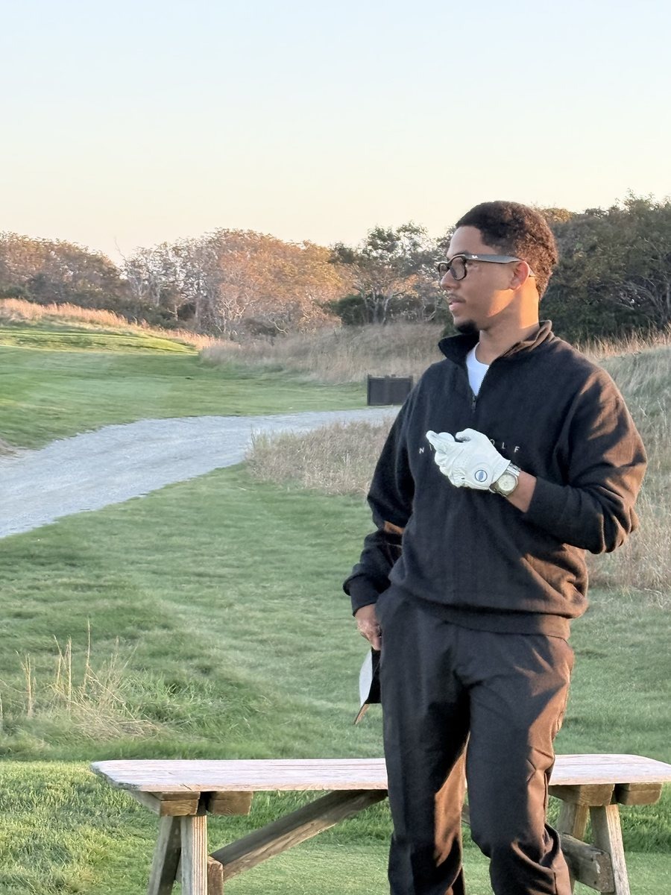

about.
I’m Cristian Sánchez Benavides. I’m bilingual in English and Spanish, I find qualified buyers and follow up, and I build my own tools with AI.
My work is reaching out first, calling back after a cancellation, and following up until there’s a clear yes or no.

Part sales
- I go after people who want to buy and can afford it.
- I message first, on social media, and I meet people at events.
- When a buyer cancels, I call back.
- I use HubSpot to stay organized.
- I follow up until I have a clear yes or no.
Part automation
- I build with Claude Code, and with plain HTML, CSS and JavaScript when that’s enough.
- When something needs a real app, I use Next.js, TypeScript and Prisma.
- I set up locks in Node.js that check every risky action my agents try before it runs.
- A separate reviewer agent tests the work before I call it done.
- Every mistake goes in a log with its cause, so it doesn’t happen twice.
My story
I live in the Bronx. By the time I finished high school in 2020 I had trophies and certificates in video editing, paid internships in engineering and web building, and a Google mentorship that ended when COVID hit.
I studied computer science at City College until 2022. That year I started working seasons on the grounds crew at Nantucket Golf Club. Seasons end, so the rest of the year went to building my own things.
I freelanced on Upwork and Freelancer: websites, booking systems, video. I built landing pages for my own affiliate links and earned the commission on them. I messaged restaurants and barbershops to offer them AI automations and digital menus. I built Shopify stores too. One sold a single $100 product and did $80,000 in gross revenue in under 6 months, mostly from Meta Ads and video ads I paid creators and influencers to make. I later sold that store.
In the off-season I tried sales. From November 2024 to April 2025 I was in the Dominican Republic, where an owner wanted to sell some houses, and I asked to sell them so I could learn. I messaged 50+ people on social media who I knew wanted to buy and could afford it, and I met others at events. I ran 5 showings. When people canceled, I called them back, several times if I had to. I sold 4 houses in under 5 months, on commission.
That opened my eyes. Starting in mid-November 2026 I want to do this full time on a sales team, remote or in New York. I’m a U.S. citizen, I speak English and Spanish, and I keep building: the projects on this site are what I make with AI in my own time.
What’s next
I’m available from mid-November 2026. If you’re hiring for SDR or sales roles, remote or in New York, let’s talk.